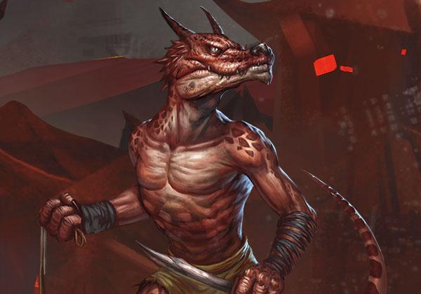
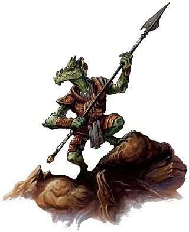
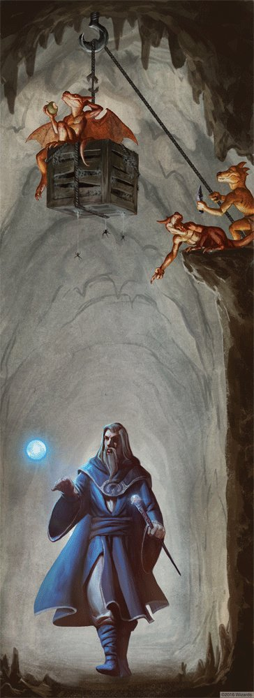
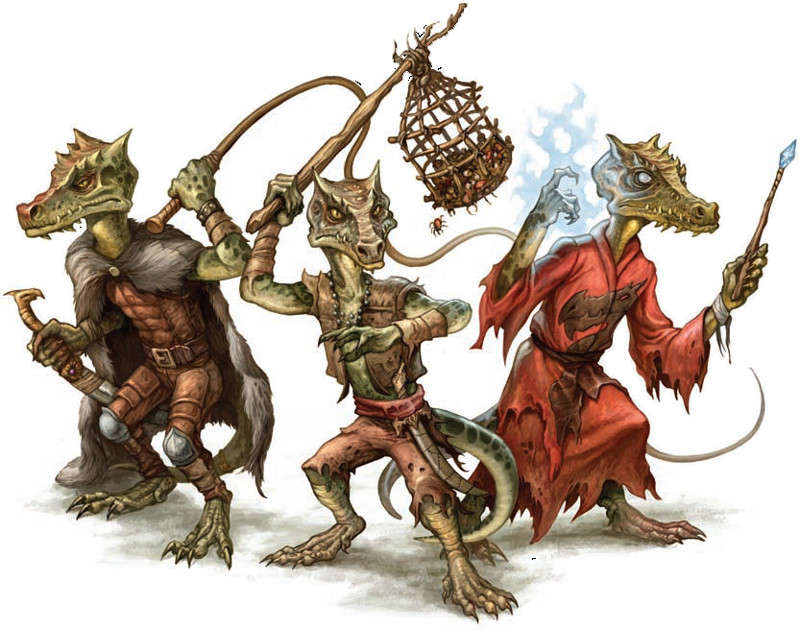

Les kobolds
De tous les habitants qui se cachent dans les recoins sombres du monde, les kobolds sont l'un des peuples les plus communs et la plupart des aventuriers en rencontreront surement au cours de leur dangereuse carrière.
Physiologie
Kobolds are craven reptilian humanoids that worship evil dragons as demigods and serve them as minions and toadies. Kobolds inhabit dragons' lairs when they can but more commonly infest dungeons, gathering treasures and trinkets to add to their own tiny hoards.
Les kobolds sont une race de petits humanoïdes couards et sadiques qui rivalisent souvent avec les races humaines et demi-humaines pour le contrôle d'un territoire ou pour de la nourriture. Mesurant à peine un mètre de hauteur, les kobolds ont une peau écailleuse qui varie d’un brun rouillé très foncé à un noir rouillé. Les guerriers kobolds sont trompeurs en apparence. Souvent, beaucoup trop souvent, des aventuriers aguerris sous-estiment leur petite taille et leurs armes primitives, mais il n’existe que peu de créatures au monde qui peuvent affronter les kobolds en combat singulier avec une bonne chance de victoire. Comme on le verra, la force réelle d'un kobold réside dans sa ruse diabolique et le nombre impressionnant de ses camarades.
ODEURS
Tout repaire de kobolds est emprunt d’une puanteur perpétuelle. Leur odeur est à la fois celle d’un chien humide et celle de l’eau stagnante. Certains vomiront surement lors de voyages dans leurs bastions infestés tellement l'odeur est répugnante. Les kobolds semblent générer eux-mêmes cette odeur. Elle ne provient pas de leur mode de vie, et elle semble être totalement ignorée par les kobolds. Plus d'une attaque kobold a été annoncée par une mauvaise odeur transportée par une bonne brise et les guerriers à l'esprit vif savent souvent tirer parti de ce savoir.
Créatures supposées originaires des profondeurs de la terre, les kobolds ont une vue particulièrement sensible au mouvement. Leurs yeux de couleur rouge sont inhabituels en ce que, lorsqu'ils sont exposés à une source de lumière, ils brillent plutôt que de simplement réfléchir cette lumière. Le mécanisme biologique de cette réaction est inconnu mais il est évident qu’il fait mal aux kobolds, les forçant à chercher à éviter la lumière vive à n'importe quel prix. Les kobolds ont par contre la capacité de la plupart des races souterraines de voir parfaitement bien dans les environnements noirs de leurs repaires. On comprend mieux maintenant pourquoi les yeux des kobolds sont des éléments importants dans l'élaboration de nombreux objets magiques.
La combinaison de leur petite taille et de leur agilité importante permet aux kobolds de se cacher efficacement dans l’ombre pour guetter leur proie. Et s'il n'y avait pas leur puanteur, la discrétion des kobolds pourrait être encore largement plus efficace.
Cycle de vie
Une des principales raisons de la prolifération des kobolds dans le monde entier est que leur cycle de reproduction leur permet de renouveler leurs effectifs à une vitesse incroyable. Les femelles de cette espèce pondent de quatre à huit œufs un mois après l'accouplement. Et il ne se passera qu’un mois avant qu'elles soient capables de reproduire à nouveau. Il est intéressant de noter ici que les kobolds n'affichent que peu de passion pour les questions sexuelles. On dit souvent que leur nature reptilienne les assimile à des animaux à sang-froid à plus d'un titre. Procréer est juste un instinct en période de grand danger, quand des accidents graves sont attendus par les kobolds, ou lorsque les chefs de clans l’ordonnent. Il n’y a aucune notion d'amour et d'appartenance entre les sexes de cette race méchante par nature.
Les œufs pondus sont rassemblés au sein de la tanière, où ils sont soignés par un petit nombre de femelles accoutumées à cet emploi, permettant ainsi à la majorité des pondeuses d'œufs de retourner à leurs tâches quotidiennes au sein du clan le plus rapidement possible. Un œuf de kobold a une coquille très dure et une surface semblable à de la pierre de taille. Leur masse est près de huit fois plus grande que celle des œufs de volailles domestiques. Ils éclosent en trois semaines, avec des variations de quelques jours en fonction de la température de l'antre et des soins qui leur sont donnés par les femelles qui en ont la charge. Ces œufs arrivent normalement à maturité beaucoup plus rapidement dans les climats plus chauds, mais ces différences sont en réalité minimes en raison de la préférence des kobolds pour des repaires dans les profondeurs de la terre.
Dès l'éclosion, les jeunes kobolds ont la pleine faculté de leurs sens et ils sont capables de marcher en quelques minutes, même s’ils sont dépendants des adultes pour leur défense contre des prédateurs plus grands que le rat commun. Leur nature tenace et féroce, même jeunes, est difficile à expliquer. Cependant, il a été observé un grand nombre de jeunes se ralliant derrière les adultes pour effectuer une mauvaise et vindicative surprise à tout envahisseur.
Leurs voix sont très aiguës et ressemblent aux jappements d'un chien de petite taille, un son particulier qui varie peu tandis que le kobold grandit et mûrit tout au long de sa vie. La maturité physique se développe dans la seule première année après l'éclosion, soit un taux de croissance phénoménal contre lequel peu d’autres races connues sont en mesure de rivaliser. Au cours de ces quelques mois, l'appétit vorace permet aux jeunes de grandir en taille et en force, un autre fait qui prouve la capacité de tout groupe de kobolds, peu importe sa taille, à se récupérer après une série de défaites. Leurs écailles sont au début douces au toucher, pas plus dures que la peau d’un homme rude. Mais tout au long de cette première année, elles durcissent et se solidifient, créant pour les kobolds une armure naturelle pour laquelle ils sont renommés. Leurs deux petites cornes sont quelque part entre le marron et le noir
Alimentation
L’habitat des kobolds les empêche de cultiver la terre. Ils préfèrent donc chasser de petits animaux et cueillir des plantes comestibles. La moitié des pièges qu'ils construisent autour de leurs repaires sont destinés à la chasse, et ils n’hésitent pas à s'aventurer hors de leur zone d'influence pour construire de tels pièges afin d’attraper des proies de presque toutes les tailles, au lieu de confronter l'animal lors d'une chasse plus traditionnelle. Les chasseurs effectuent des contrôles de routine sur ces pièges : rechargement, réparation et, s'ils sont chanceux, récupération des proies tombées dans les pièges. Si les réserves de nourritures sont satisfaisantes, tout intrus tombé dans un piège kobold sera laissé à l'abandon après avoir été tué et son corps dépouillé de tout objet de valeur. Ce n'est que lorsque leur situation est préoccupante que les kobolds rapportent les carcasses d'aventuriers égarés pour les dépecer et les manger.
Les kobolds ne sont pas des cuisiniers compétents. Ils ne cuisent les aliments que pour les ramollir pour les nouveau-nés. Sinon, ils semblent avoir l'estomac tellement blindé qu’ils sont capables de digérer cru n’importe quoi.

Habitat
Kobolds make up for their physical ineptitude with a cleverness for trap making and tunneling. Their lairs consist of low tunnels through which they move easily but which hinder larger humanoids. Kobolds also riddle their lairs with traps. The most insidious kobold traps make use of natural hazards and other creatures. A trip wire might connect to a springloaded trap that hurls clay pots of flesh-eating green slime or flings crates of venomous giant centipedes at intruders.
Si rien n'est fait, la propagation des kobolds ressemble à une peste qui balaye des régions entières et écrase tout sur son passage, rien que de par leur nombre. Seules une résistance et une volonté déterminées peuvent les stopper. Il y a toutefois aussi une constante, la lumière inflexible du soleil, qui éloigne de la surface du monde ces créatures des profondeurs... au moins durant la journée. La majorité des kobolds vivent de fait dans l'obscurité perpétuelle des cavernes, tunnels et autres grottes. Ils sont là, cachés, menace perpétuelle pour les races civilisées. Mais l’accroissement de leur nombre, la concurrence pour l'espace vital et l’ombre, et parfois aussi des horreurs sans nom, les forcent régulièrement à remonter à la surface, et y provoquer des souffrances indicibles.
Bien que vivant dans des domaines souterrains, les kobolds supportent facilement des températures extrêmes et un climat rude. On les retrouve donc fréquemment à travers le monde, de la montagne la plus haute et la plus froide à la jungle la plus humide, même s'ils ont toutefois tendance à se détourner des zones arides. La lumière directe leur causant d’indéfectibles et réelles douleurs physiques (même les jours couverts leur procurent un grand malaise), des grottes ou des ruines avec des complexes souterrains étendus seront souvent recherchés en vue de fournir un repaire facilement défendable à partir duquel ils pourront lancer des raids une fois la nuit tombée. Les forêts et les jungles sont également des lieux privilégiés si les logements souterrains manquent, des feuillages assez épais créant un crépuscule presque constant.
CAVERNES
Avec des centaines de mètres de roche entre eux et la lumière du soleil, les kobolds sont à leur affaire. Ce sont des mineurs accomplis, capables de créer des tunnels et des cavernes qui leur sont propres, leur grand nombre et l'utilisation de machines compensant leur faiblesse physique. Des histoires parlent même d'incroyables complexes souterrains kobolds qui rivaliseraient avec ceux des nains.
En plus des zones obscures, les kobolds recherchent aussi naturellement des zones humides, dues aux conditions atmosphériques ou à la proximité de sources d'eau. Là aussi, les forêts et les jungles sont de bonnes options pour eux, mais il existe de nombreuses histoires rapportant que de petits groupes de kobolds ont été aperçus sortant la nuit de ruines au cœur des déserts et des savanes. Probablement de tels endroits cachaient un cours d'eau, ou peut-être que ces kobolds ont été capables de creuser sous la surface suffisamment profond pour découvrir rivières et lacs souterrains. La leçon ici est cependant claire : donnez-leur assez d'eau pour les sustenter et un bouclier contre les rayons brûlants du soleil, et les kobolds peuvent vivre dans n'importe quelle région du monde.
Donnez-leur assez de temps, et les kobolds peuvent transformer n'importe quelle caverne ou grotte abandonnée en un dédale complexe capable de résister au siège d'une armée. Un antre kobold typique aura des dizaines de tunnels et d'embranchements de toutes tailles, connectant tous les espaces entre eux. La plupart des aventuriers suivront les couloirs les plus larges et les plus grands, ceux qui offrent le déplacement le plus facile. Ce sont souvent ceux que les kobolds piègent le plus et qu'ils empruntent le moins, même pour transporter des matériaux et des prisonniers ou des proies de grande taille. Ces tunnels de distraction fourmillent donc de pièges, de fosses et d'alcôves cachées à partir desquelles un guerrier kobold peut harceler les envahisseurs et procéder à une retraite rapide. Tous ces passages étroits permettent également à une tribu kobold de s'éloigner sans aucun mal loin de toute force qui réussirait à transpercer leurs défenses, assurant ainsi la survie de leur peuple et leur donnant une chance de se venger de ceux qui les auront chassé de leurs foyers.
Les ruines abandonnées présentent un défi intéressant pour ces petits lézards. Avant de s'installer, des éclaireurs vérifient chaque pouce de terrain pour découvrir tous les pièges ou passages cachés que les constructeurs d'origine pourraient avoir laissés derrière eux. Ils reviennent alors quelques jours plus tard face à leurs chefs avec une carte presque complète de leur future demeure, afin que ceux-ci décident comment utiliser au mieux les zones et les chambres qui ont été découvertes. Ensuite, durant plusieurs semaines, les kobolds réarment tous les pièges d'origine qu'ils auront trouvés, et en construisent de nouveaux, tout en se familiarisant avec leur nouvelle maison. Cela leur donne un avantage tactique sur tous les curieux qui viendront empiéter sur leur nouveau domaine. Si les ruines ont d'autres habitants, les kobolds prennent grand soin à les étudier. S’ils peuvent être tués ou expulsés avec peu de risques, ils le feront. Si le voisin est trop fort pour eux, mais gérable, ils l’utiliseront comme défense de leur tanière. Ce n'est que si la créature ou le groupe de créatures est beaucoup plus puissant qu'eux qu'ils chercheront un autre endroit pour vivre.
Combats
Kobolds are egg-laying creatures. They mature quickly and can live to be "great wyrms" more than a century old. However, many kobolds perish before they reach the end of their first decade. Physically weak, they are easy prey for predators. This vulnerability forces them to band together. Their superior numbers can win battles against powerful adversaries, but often with massive casualties on the kobold side.
Étant donné leur petite taille et leur relative faiblesse physique, c’est seulement la capacité des kobolds à travailler ensemble qui leur permet de survivre dans un monde qui déploie tant d'efforts pour éradiquer leur race. Les kobolds ont en effet de nombreux ennemis et prédateurs naturels, à la fois en surface et dans l'obscurité de leurs maisons sous terre. Presque toutes les autres races qu'ils rencontrent sont plus fortes qu'eux physiquement, alors les kobolds ont appris à s'adapter, à moins compter sur leur taux de reproduction élevé et plus sur leur sens de survie pour maintenir leur existence. Les kobolds sont de fait connus dans le monde entier pour leur cruauté, leur méchanceté et leur hargne, et cela n'est pas surprenant si l’on considère les efforts de presque toutes les races pour les éliminer. Un kobold ne demandera jamais de répit et ne sera certainement pas enclin à en offrir, quelles que soient les circonstances. Il ne peut tout simplement pas imaginer la possibilité qu'un membre d'une autre race puisse penser à autre chose que de tenter de le détruire.
Les kobolds sont prêts à attaquer toute menace pour leur territoire, mais ils détestent surtout les gnomes, qu’ils attaquent à vue et qu'ils préfèrent à tout autre ennemi. Ils sont même prêts à livrer des attaques presque suicidaires s'il s'agit de chasser une présence gnome de leur voisinage. Il est également fascinant de constater qu’ils ne font jamais de prisonniers gnomes. En effet, si les kobolds, omnivores, sont généralement tout à fait disposés à festoyer du corps de créatures, ils ne touchent jamais à la chair de cet ennemi intime.
La stratégie des kobolds est souvent basée sur une grande supériorité numérique ou sur la tromperie. Les kobolds attaqueront donc les gnomes à vue en raison de leur haine envers cette race, mais y penseront à deux fois avant d’attaquer les humains, les elfes ou les nains, à moins d’être en surnombre, à plus de deux contre un. Ils lancent souvent leurs javelines et leurs lances de fantassin, préférant ne pas s’approcher avant que leurs ennemis aient été affaiblis. Lorsqu'ils décident enfin d’entrer en mêlée, ils attaquent par vagues incessantes. Une multitude de kobolds peut souvent ensevelir et faire tomber des adversaires beaucoup plus grands qu’eux. Il doit ici être spécifié que les kobolds se méfient des lanceurs de sorts et attaqueront ceux-ci dès que possible. Les combattants kobolds sont armés de gourdins, piques, hachettes, javelines, épées courtes et lances de fantassin. Leurs boucliers sont rarement en métal, le plus souvent en bois et en osier. Les chefs et les gardes ont les meilleures armes de la tribu.
Société
Les kobolds ont un système social complexe qui leur permet d’évoluer rapidement. Chacun a sa place dans la société et tout le monde le sait ; chaque individu sait donc ce qu'on attend de lui et remplit son devoir, même à contrecœur, car le travail d'équipe est souvent la seule chose qui les maintient en vie. La société kobold est en effet très disciplinée et composée de castes clairement définies au sein d'une hiérarchie. Les marques de caste ne sont jamais évidentes pour un non-kobold, car confondre les chiffons colorés qu'ils portent est chose facile. En effet, les kobolds, qui aiment s'habiller dans des tons rouge et jaune, et bien que leurs techniques de teinture soient rudimentaires, utilisent les vêtements pour différencier leur statut dans la société. Une caste kobold peut ainsi être distinguée d'une autre par la couleur, le nombre et la position des rubans attachés à leurs bras.
CHAISES MUSICALES
Aucun kobold n’est content de sa position dans la vie et tous cherchent en permanence un moyen de progresser. La dominance sociale est donc un passe-temps dans tout antre kobold, avec des centaines de complots en marche en même temps, chacun dans le but de prendre la position de leurs rivaux. Lorsqu'ils sont à l'abri des menaces extérieures, la ruse et le ressentiment des kobolds sont ainsi tournés vers l'intérieur, contre leurs frères.
Cela crée un système complexe de couleurs et de combinaisons. Un ruban rouge porté sur le bras droit ne signifie pas la même chose que s'il est porté sur le gauche. Seules les plus hautes castes peuvent attacher des bandes de chiffons rouges brillants en nœuds sur la poitrine, tandis qu'un bandana ou un foulard autour du cou est le symbole du statut le plus élevé qu'un kobold peut occuper. Plus malveillant que jamais, les kobolds aiment montrer leur statut, jappant dérisoirement envers leurs subalternes et murmurant poliment face à leurs supérieurs. Malgré cette acceptation réticente de l'ordre social, l'utilité du système des castes entre en jeu quand une bande ou un clan tout entier est confronté à une situation d'urgence. Dans ces occasions, les kobolds se rallient autour de leurs dirigeants et obéissent aux ordres sans hésitation, qu'il faille charger dans une tentative désespérée pour gagner un temps précieux afin que leurs paires puissent s'enfuir ou pour préparer une embuscade qui fera choir la menace.
Défis
Quand un kobold est convaincu qu'il a tout mis en place pour évincer un rival et prendre sa position, il lance un défi. Mais les petits reptiles n'aiment pas se battre entre eux, simplement parce qu'ils ne sont pas bâtis pour le combat. Alors, plutôt que des épreuves de combat, les kobolds se livrent à des tests de ruse. Ces défis prennent de nombreuses formes. L'un des plus populaires est le gantelet. Les deux concurrents ont une semaine pour préparer un tunnel rempli de pièges, qu'ils doivent construire de leurs propres mains et sans l'aide d’aucun autre kobold. Ces pièges peuvent être magiques si le kobold est sorcier, mais tous doivent être auto-déclenchés, ce qui signifie qu'aucun ami ou allié ne peut le déclencher pour eux. À la fin de la semaine, les deux compétiteurs doivent marcher dans le tunnel de l'autre et éviter tous les pièges. Celui qui sort le premier gagne. Si l'adversaire meurt, le vainqueur gagne encore plus de prestige. Dans le cas fort probable où les deux se font tuer, tous les kobolds se contentent de hausser les épaules et les deux castes, ayant perdu un membre, essayeront de combler la perte.
Des formes moins létales de défis existent aussi comme les insultes, apporter des captifs, trouver un objet le premier ou l'emporter seul face à une plus grande créature. Les concours d'artisanat ne sont pas aussi fréquents que les autres formes de défis, mais sont encore étonnamment répandue, ce qui prouve en outre que les kobolds ne sont pas des brutes sauvages. Les défis entre deux sorciers sont toujours spectaculaires, car ce sont toujours des duels magiques. Les sorts que chaque lanceur connaît ne sont pas aussi importants que la façon dont il les utilisera. Ces défis sont les plus fascinants parce que chacun des participants affiche une créativité dans l'utilisation des sorts qui étonneraient les magiciens d'autres races.
Castes
LES SOUS-CASTES
Les castes supérieures sont connues comme les castes des Cornes et comptent parmi eux nombre de chefs de tribu. Chose d'unique dans un système social, les kobolds ne classent pas leurs membres en fonction de ce qu'ils font, mais plutôt en fonction de leurs aptitudes à réaliser leur activité. Les sous-castes des Cornes, différenciées par les couleurs, sont les Cornes Cramoisies pour les chefs, les Cornes Ocres qui comprennent sorciers et prêtres, les Cornes d'Or qui regroupent les artisans, les Cornes Noirs pour les trappeurs et les chasseurs, les Cornes Blanches pour les guerriers et les Cornes Vertes qui regroupent les cueilleurs et les simples travailleurs.
Mis à part les Cornes, le reste des castes kobolds sont beaucoup plus souples dans leur catégorisation, sans hiérarchie. Parmi les autres castes citons la Balance, les Griffes, les Crocs, les Queues, les Talons, les Yeux fendus, la Corne-Striée et les Langues.
Contrairement aux systèmes de castes humaines, les kobolds ne s'organisent pas en professions ou activités analogues. Il n'y a pas une caste de « guerriers » ou de « religieux », ainsi les guerriers peuvent appartenir à des castes très différentes. Les kobolds utilisent en fait un étrange système d'hérédité et de méritocratie pour déterminer leurs castes. L'idée de base est que le kobold qui est le plus utile à la tribu appartient à une caste supérieure et on attend des descendants des membres d'une caste d'être aussi utiles que leurs parents. Ainsi, si un kobold n'est pas à la hauteur des attentes de sa caste, il peut être remplacé par un autre kobold plus capable. Chaque caste se décompose en sous-castes qui entretiennent une relation de pouvoir semblables à celles des castes, mais quel que soit son statut au sien de sa caste, le membre d'une caste supérieure est toujours plus important que le plus haut membre d'une caste inférieure. Les castes ont des noms qui sont le plus souvent intraduisibles, ayant rapport avec les parties du corps reptilien, et les sous-castes sont différenciées par des qualificatifs. Les personnes qui se sont échappés de la captivité des kobolds disent que ces petits lézards parlent aussi souvent des Ailées, que même les Cornes craignent et redoutent, sans que jusqu'à présent personne n'ait pu savoir de qui il s'agit réellement.
Nations kobolds
L'existence des nations kobold n'est que pure spéculation. Une nation serait composée de plusieurs tribus avec des membres se comptant par milliers. Une telle masse de kobolds vicieux et impitoyables serait capable de dépasser toute forme de résistance, en particulier compte tenu de la proportion incroyable de sorciers parmi leur population. Imaginez un barrage de centaines, voire de milliers de projectiles magiques dans une seule volée. Une telle nation aurait besoin d'un chef incroyablement puissant pour garder toutes les machinations des castes des Cornes et des Ailées en échec. On dit que des dragons perspicaces pourraient s'emparer de ces groupements. Seule une créature de ce calibre serait en effet en mesure de soumettre un si grand nombre de kobolds.
Travail quotidien
Compte tenu de leur croissance rapide, les nouveau-nés se joignent à un groupe de travail presque un an après leur naissance. Ce travail forcé aide les kobolds adultes à garder un œil sur eux, sans pour autant négliger leurs devoirs envers le clan tout en libérant ceux qui s'occupent de la nurserie pour de nouvelles naissances. Les jeunes kobolds apprennent la langue et les compétences de base en quelques mois, devenant ainsi véritablement capables et utiles aux membres de leur communauté en moins de cinq ans. Comme cela a été mentionné précédemment, un groupe de travail est composé de membres d’une même caste quand il fait appel à des compétences générales, mais rassemble les membres de castes différentes lorsque la tâche à accomplir est très spécifique. Une force d'exploitation minière sera ainsi composée de mineurs de différentes castes, les surveillants, de statut supérieur, dominant impitoyablement les autres.
Chaque dirigeant kobold bénéficie d'un certain degré d'autonomie sur ses subalternes. Ces petits reptiles profitent de leurs jeux de pouvoir et ne manquent aucune occasion de se gausser et d’écraser leurs inférieurs, ce qui explique pourquoi tous les kobolds veulent monter vers une caste supérieure. Les petits seigneurs, les dirigeants et les maîtres organisent donc leurs groupes comme ils l'entendent.
Captifs, esclaves et animaux domestiques
Un kobold haie toute autre créature sensible et prend grand plaisir à tourmenter les captifs qu’il garde. Mais les kobolds ne font pas très souvent des prisonniers, préférant laisser pourrir les intrus dans un piège après avoir saisi ses objets de valeur ou simplement tuer leurs cibles sans défense à distance, en sécurité. Les captifs, dans l’esprit d’un kobold, sont là pour endurer la douleur, mais très peu des créatures peuvent soutenir cette règle ! Les créatures de taille humaine ou plus grandes sont forcées à s'accroupir et à marcher à quatre pattes, sous l'humiliation constante des kobolds jubilant.
Si jamais ils prennent des esclaves, les kobolds préfèrent qu'ils soient de leur taille, comme les halfelins ou les gobelins. Les créatures plus grandes sont trop pénibles et présentent un risque constant, alors ils les vendent à la première occasion à d'autres races. La prison la plus commune est une fosse couverte par une grille de fer, avec des piquets de bois vers le bas pour dissuader les candidats à l'escalade. Lorsque des prisonniers sont pris, les kobolds s'assurent qu'ils sont dépouillés de toute possession, les objets de valeur allant aux castes les plus élevées. Les objets qu'ils ne peuvent pas utiliser, comme les grandes armes, sont vendues ou échangées avec d'autres races.
Les animaux domestiques sont rares parmi les kobolds, car seuls quelques animaux peuvent tolérer l'odeur d'un repaire kobold. Ils capturent et dressent toutefois certains animaux pour les aider dans la bataille, les belettes passant pour être leurs favorites, car elles ont juste la bonne taille pour leur servir de montures et sont vicieuses et sournoises.
Mines et industrie
Les kobolds sont des mineurs compétents. Certaines des machines trouvées dans des mines kobold pourraient rivaliser avec celles des nains en termes de fonctionnalité, sinon en performance. Les kobolds cherchent principalement les métaux précieux et les pierres précieuses. Ils sont parfaitement conscients de la valeur de ces matières et sont de fins négociateurs avec les races qui ne sont pas directement en guerre avec eux. Trouver un bon filon est une grande nouvelle pour les kobolds, qui l'utilisent pour acheter le soutien des avides gobelins ou pour en faire un appât pour leurs pièges. Cette petite race aime aussi préparer des fosses camouflées avec des pieux, des arbalètes et d'autres pièges mécaniques. Ils mettent généralement des ouvertures et des meurtrières près de ces pièges pour ensuite verser de l'huile bouillante, tirer des projectiles ou jeter des insectes venimeux sur leurs victimes.
PIÈGES
Les dispositifs diaboliques que les kobolds construisent sont fascinants de simplicité, mais rusés à l'extrême. Les kobolds investissent leurs meilleurs efforts dans la fabrication de trappes. D'ingénieux roublards se tapent la tête lors de l'examen d'un piège kobold dans lequel ils sont tombés, pestant contre des choses pourtant aussi simples. S'il y a une fierté culturelle chez les kobolds, c'est assurément leurs pièges.
Leur production minière dépasse celle d'une mine humaine à nombre de travailleurs équivalent. Les kobolds feraient un excellent partenaire commercial si ce n'était les mauvaises relations qu'ils entretiennent avec le reste du monde. Ce qu'ils font avec autant de matières premières reste un mystère, mais les piles disparaissent du jour au lendemain. Pourtant, autant les kobolds sont bons pour extraire des pierres précieuses et des minéraux, autant ce sont de mauvais artisans. Ils n'ont que très peu de forges pour fabriquer des armes et des armures, et elles sont de qualité médiocre, sauf peut-être les fers de lance et les arbalètes, qui sont plutôt de bonne facture.
La fascination des mécaniques
Les kobolds ne ressentent aucune fierté pour un travail bien fait ou l’esthétique d'un objet fini. L'important est l'utilisation pratique. Ce qu'ils font est de mauvaise qualité et fait dans la précipitation mais, contrairement à la première impression, ce sont des choses durables et fonctionnelles. Une barre de prison sera un peu tordue, pas droite, mais résolument solide. Tout comme les gnomes, les kobolds ont une étrange fascination pour les dispositifs mécaniques. Probablement une raison de leur haine mutuelle. En contraste avec les gadgets gnomes sophistiqués, les machines kobold sont rustiques et inesthétiques, faites principalement de bois et de fer. Mais cela ne signifie pas qu'ils sont moins intelligents. Les kobolds possèdent des ascenseurs à manivelle dans leurs mines les plus profondes, avec des contrepoids qui n’ont besoin que de la force d'un seul kobold pour être manipulés et, surtout, ils ont leurs pièges.

Religion
In addition to the dragons they revere, kobolds worship a lesser god named Kurtulmak. Legends speak of how Kurtulmak served as Tiamat's vassal in the Nine Hells until Garl Glittergold, the god of gnomes, stole a trinket from the Dragon Queen's hoard. Tiamat sent Kurtulmak to retrieve the trinket, but Garl Glittergold played a trick on him, collapsing the earth and trapping the kobold god in an underground maze for eternity. For this reason, kobolds hate gnomes and pranks of any kind. Kurtulmak's most devoted worshipers dedicate themselves to finding and releasing their lost god from his prison-maze.
Les kobolds aiment leur dieu, Kurtulmak, le dieu de la guerre et des mines, probablement le seul être dans l'univers qui les aime. Celui-ci les récompense pour leur dévouement tout en ne demandant pas trop en matière de pratiques religieuses, sachant très bien qu'ils sont assez occupés à essayer de survivre. Les kobolds l'honorent par le seul fait de se borner à être en vie, constituant une épine dans le pied des autres races. Les kobolds et les gnomes ont une haine instinctive de l'autre en raison d'une farce jouée à Kurtulmak par la divinité gnome Garl Brilledor. Selon certains mythes, Garl aurait fait effondrer la grotte de Kurtulmak parce que le dieu gnome voyait que les kobolds allaient devenir la race dominante.
Les prêtres de Kurtulmak sont connus comme les Yeux de Kurtulmak. Ils vivent rarement assez longtemps pour devenir de grands chefs, mais ont beaucoup de pouvoirs et d'influences, siégeant en tant que superviseurs des mines et dirigeant la tribu vers des objectifs « divinement inspirés ». Les services de culte organisés sont presque inexistants, mais la plupart des kobolds récitent de petites prières toute la journée. Les kobolds croient beaucoup en la réincarnation, que Kurtulmak peut utiliser comme récompense ou punition en fonction de leur service à la tribu. L'un des devoirs d'un prêtre est de veiller sur les œufs et les nouveau-nés qui sont considérés comme la réincarnation d'un kobold distingué.
Arcanes et mystères enfouis
UN LIEN ANCESTRAL ?
La combinaison d'une physiologie reptilienne et d’une prépondérance de sorciers avec le fait que leur langue naturelle est le draconique conduit beaucoup de personnes à en tirer la conclusion qu'il existe une certaine relation, encore inconnue, entre les petits mais tenaces kobolds et les grands et majestueux dragons. D'autres soulignent les failles de ce raisonnement, invoquant l'absence de toute preuve d'un tel lien et le fait que, lorsque les dragons sont trouvés, les kobolds représentent leurs proies les plus nombreuses.
Il y a proportionnellement un nombre de sorciers (ensorceleurs) bien plus grand chez les kobolds que dans toute autre race connue. Ces personnes sont généralement les leaders des clans dans la mesure où seuls les plus accomplis des guerriers peuvent espérer une position d'autorité. La majorité des sorciers kobolds sont pourtant relativement faibles devant la puissance de nombreux praticiens des races civilisées.
Mais leur grand nombre au sein de tout antre kobold représente souvent une mauvaise surprise pour des aventuriers trop confiants. En outre, une petite proportion possède tout de même de telles capacités pour dompter les énergies que ces créatures non seulement dirigent le clan kobold d'une main de fer, mais peuvent également repousser seules les envahisseurs de leur domaine si elles le désirent. Alimentés par l'énergie des arcanes, ces sorciers peuvent vivre deux voire même trois cents ans et, canalisant leurs forces, finissent par devenir célèbres et redoutés.
Terminons en disant qu'un nombre croissant d'aventuriers parlent d'une caste kobold au leadership supérieur qui semble dominer les plus grands repaires. Des légendes relatent des kobolds plus grands en taille et en force que le reste de leurs parents, aux ailes surdimensionnées avec d'énormes pouvoirs de sorcellerie qui éclipse tout ce qui a été vu avant pour cette race. Jusqu'ici, toutefois, pas un seul aventurier n’a été en mesure de produire autre chose que des preuves anecdotiques. La plupart des savants sont donc toujours en attente d'une preuve solide, aucun corps, par exemple, n'ayant jamais été montré. Si une telle sous-race existait, cela pourrait faire avancer la théorie qu'il existe un lien entre les kobolds et les dragons.
Traduit par Arocka, adapté par blueace